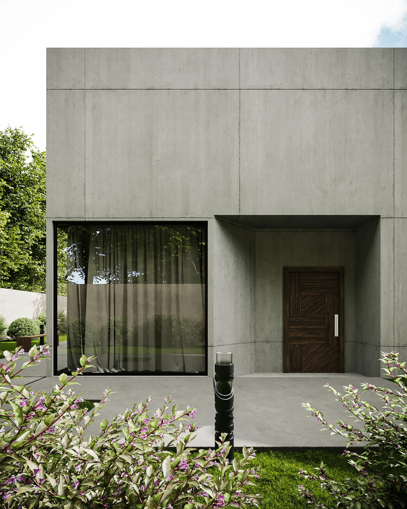
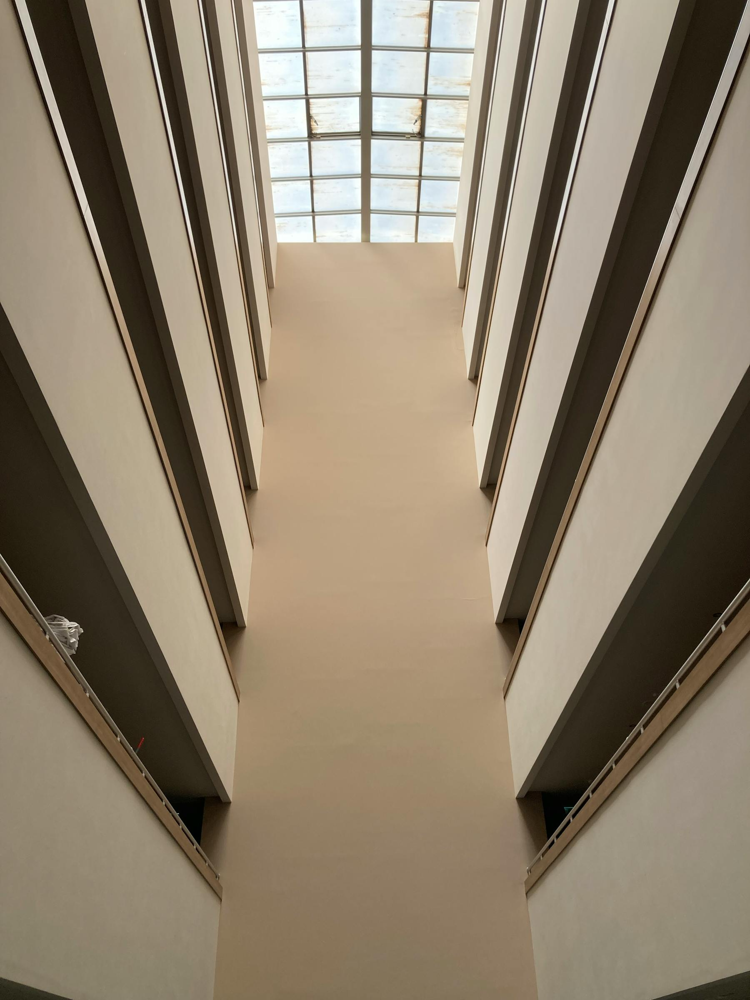
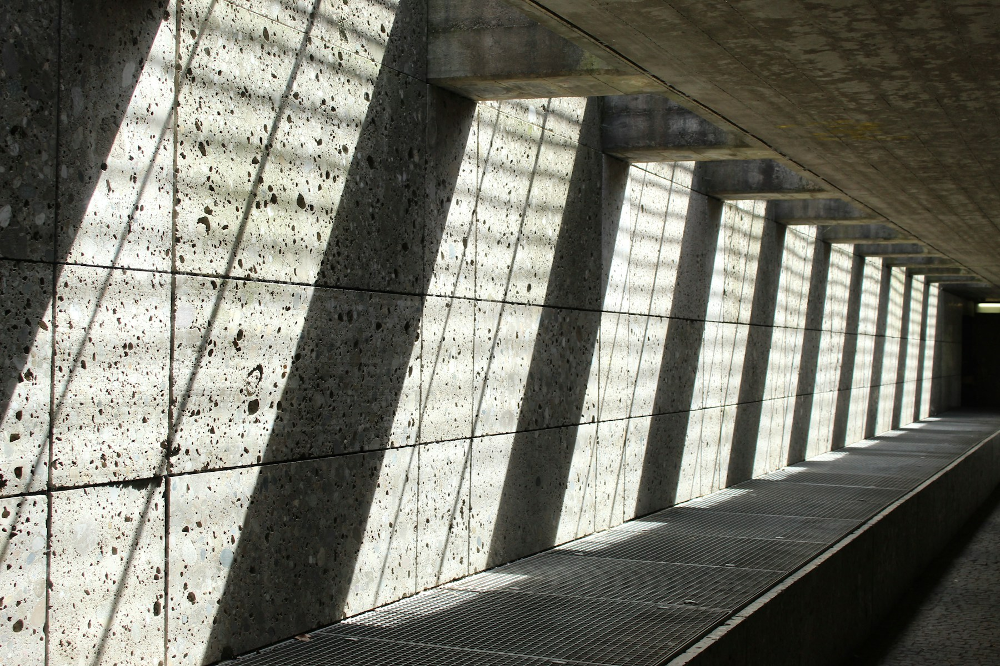

Визуальный слот 01
Язык частной резиденции
Объём, проёмы и переходные зоны рассматриваются как единая архитектурная композиция. Временное изображение, без выдуманных утверждений о проекте.
Частное архитектурное бюро
Мы проектируем частные резиденции, интерьеры и пространственные образы через спокойный редакционный процесс: меньше жестов, точнее решения, долговечнее логика материалов.
Запросить консультациюНаша работа начинается с контекста: участка, ежедневного ритма людей, которые будут жить в пространстве, качества естественного света и дисциплины того, что должно остаться незаметным. Результат — не декор, а пространственная система с ясным намерением.
Избранные работы

Объём, проёмы и переходные зоны рассматриваются как единая архитектурная композиция. Временное изображение, без выдуманных утверждений о проекте.
Спокойный контраст материалов, сдержанный свет и свободная циркуляция задают тон интерьеру без декоративной избыточности.

Направления

Деталь / мастерство
Материал Поверхности выбираются по массе, старению, тактильности и связи с доступным светом.
Пропорция Планы уточняются до момента, когда движение, проёмы и встроенные элементы кажутся неизбежными.
Контекст Архитектура настраивается под участок, климат, видовые оси и приватность до работы со стилем.
Процесс
Амбиция проекта, ограничения, участники решений, сроки и логика бюджета.
Фиксируются участок, план, свет, движение, приватность и технические условия.
Формируются архитектурная идея, атмосфера, объём и материальный вектор.
Уточняются планировки, детали, отделки, свет, столярные элементы и документация.
Вопросы площадки, замены и финальные решения остаются согласованы с концепцией.
Частная консультация
Отправьте короткое описание проекта. Первый ответ будет посвящён соответствию задачи, объёму работы и самому рациональному следующему шагу.
studio@example.com